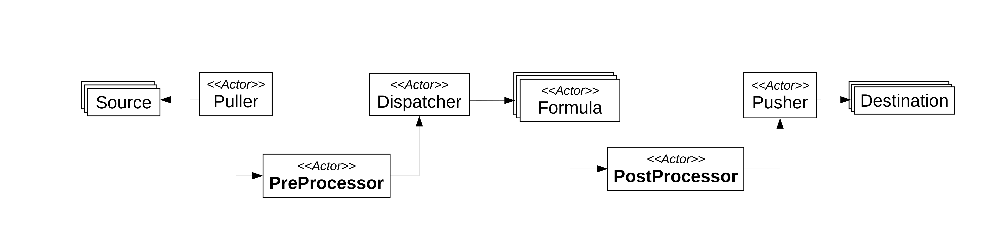

Processors
Processors enable customized filtering and/or modifications of Reports.
There are two kinds of processors:
PreProcessors: They are located between thePullerand theDispatcher. They are supposed to pre-process theHWPCReportsbefore computing estimations.PostProcessors: They are located between, theFormulaand thePusher. They processPowerReportsbefore storing them on theDestination.
Figure below depicts where are they introduced in the architecture of a Software PowerMeters.

Processors are optional, which means that you can continue to use Software PowerMeters as usual if you don't need them.
K8sPreProcessor
This PreProcessor uses the Kubernetes client for Python in order to get information related to Reports.
In particular, pod's names (pod_name) and pod's name space (pod_namespace) are collected.
This information is added to metadata of the concerned Report.
If a Report does not have this information, empty strings are used as values.
If you want to use a K8sPreProcessor in your Software PowerMeter, you have to specify
k8s as the type of the PreProcessor.
Parameters
| Parameter | Type | CLI shortcut | Default Value | Mandatory | Description |
|---|---|---|---|---|---|
k8s-api-mode |
string | a |
N/A | Yes | The configuration method used to run K8s. Possible values are local, manual and cluster |
time-interval |
int | t |
0 | No | The time (in seconds) between each query sent to K8s API |
timeout-query |
int | o |
5 | No | The timeout (in seconds) associated with a K8s query |
puller |
string | p |
N/A | Yes | The puller's name associated with the PreProcessor |
host |
string | h |
http://localhost |
No | The host associated with K8s. To be used with k8s-api-mode = manual together with api-key |
api-key |
string | k |
YOUR_API_KEY |
No | The API Key associated with K8s. To be used with k8s-api-mode = manual together with host |
name |
string | n |
N/A | Yes | The name of the PreProcessors |
JSON File Excerpt
"pre-processor":{
"p1":{
"type": "k8s",
"k8s-api-mode": "local",
"time-interval": 20,
"timeout-query": 30,
"puller": "puller"
}
}
As notice, a PreProcessor is defined inside the pre-processor group. In this example, we are assuming that a puller named puller is defined in the input group of the same configuration.
Example of Usage with SmartWatts Formula via CLI parameters
docker run -t \
--net=host \
powerapi/smartwatts-formula --verbose \
--input mongodb --model HWPCReport --uri mongodb://127.0.0.1 --db test --collection prep \
--output influxdb --model PowerReport --uri 127.0.0.1 --port 8086 --db test_result \
--pre-processor k8s --name p1 --k8s-api-mode local --time-interval 20 --timeout-query 30 --puller puller \
--cpu-base-freq 1900 \
--cpu-error-threshold 2.0 \
--disable-dram-formula \
--sensor-reports-frequency 1000
python -m smartwatts \
--verbose \
--input mongodb --model HWPCReport --uri mongodb://127.0.0.1 --db test --collection prep \
--output influxdb --model PowerReport --uri 127.0.0.1 --port 8086 --db test_result \
--pre-processor k8s --name p1 --k8s-api-mode local --time-interval 20 --timeout-query 30 --puller puller \
--cpu-base-freq 1900 \
--cpu-error-threshold 2.0 \
--disable-dram-formula \
--sensor-reports-frequency 1000
Example of Usage with SmartWatts Formula with Environment Variables
docker run -t \
--net=host \
-e POWERAPI_VERBOSE=true \
-e POWERAPI_STREAM=true \
-e POWERAPI_CPU_BASE_FREQ=1900 \
-e POWERAPI_CPU_ERROR_THRESHOLD=2.0 \
-e POWERAPI_DISABLE_DRAM_FORMULA=true \
-e POWERAPI_SENSOR_REPORTS_FREQUENCY=1000 \
-e POWERAPI_INPUT_PULLER_MODEL=HWPCReport \
-e POWERAPI_INPUT_PULLER_TYPE=mongodb \
-e POWERAPI_INPUT_PULLER_URI=mongodb://127.0.0.1 \
-e POWERAPI_INPUT_PULLER_DB=test \
-e POWERAPI_INPUT_PULLER_COLLECTION=prep \
-e POWERAPI_OUTPUT_PUSHER_POWER_MODEL=PowerReport \
-e POWERAPI_OUTPUT_PUSHER_POWER_TYPE=influxdb \
-e POWERAPI_OUTPUT_PUSHER_POWER_URI=127.0.0.1 \
-e POWERAPI_OUTPUT_PUSHER_POWER_PORT=8086 \
-e POWERAPI_OUTPUT_PUSHER_POWER_DB=test_result \
-e POWERAPI_PRE_PROCESSOR_P1_TYPE=k8s \
-e POWERAPI_PRE_PROCESSOR_P1_K8S_API_MODE=local \
-e POWERAPI_PRE_PROCESSOR_P1_TIME_INTERVAL=20 \
-e POWERAPI_PRE_PROCESSOR_P1_TIMEOUT_QUERY=30 \
-e POWERAPI_PRE_PROCESSOR_P1_PULLER=puller \
powerapi/smartwatts-formula
export POWERAPI_VERBOSE=true
export POWERAPI_STREAM=false
export POWERAPI_CPU_BASE_FREQ=1900
export POWERAPI_CPU_ERROR_THRESHOLD=2.0
export POWERAPI_DISABLE_DRAM_FORMULA=true
export POWERAPI_SENSOR_REPORTS_FREQUENCY=1000
export POWERAPI_INPUT_PULLER_MODEL=HWPCReport
export POWERAPI_INPUT_PULLER_TYPE=mongodb
export POWERAPI_INPUT_PULLER_URI=mongodb://127.0.0.1
export POWERAPI_INPUT_PULLER_DB=test
export POWERAPI_INPUT_PULLER_COLLECTION=prep
export POWERAPI_OUTPUT_PUSHER_POWER_MODEL=PowerReport
export POWERAPI_OUTPUT_PUSHER_POWER_TYPE=influxdb
export POWERAPI_OUTPUT_PUSHER_POWER_URI=127.0.0.1
export POWERAPI_OUTPUT_PUSHER_POWER_PORT=8086
export POWERAPI_OUTPUT_PUSHER_POWER_DB=test_result
export POWERAPI_PRE_PROCESSOR_P1_TYPE=k8s
export POWERAPI_PRE_PROCESSOR_P1_K8S_API_MODE=local
export POWERAPI_PRE_PROCESSOR_P1_TIME_INTERVAL=20
export POWERAPI_PRE_PROCESSOR_P1_TIMEOUT_QUERY=30
export POWERAPI_PRE_PROCESSOR_P1_PULLER=puller
python -m smartwatts
Example of Usage with SmartWatts Formula via a Configuration File
Below an example is provided by using MongoDB as Source and InfluxDB as Destination.
{
"verbose": true,
"stream": true,
"input": {
"puller": {
"model": "HWPCReport",
"type": "mongodb",
"uri": "mongodb://127.0.0.1",
"db": "test",
"collection": "prep"
}
},
"output": {
"pusher_power": {
"type": "influxdb",
"uri": "127.0.0.1",
"port": 8086,
"db": "test_results",
"collection": "power_consumption2"
}
},
"pre-processor":{
"p1":{
"type": "k8s",
"k8s-api-mode": "local",
"time-interval": 20,
"timeout-query": 30,
"puller": "puller"
}
},
"cpu-base-freq": 1900,
"cpu-error-threshold": 2.0,
"disable-dram-formula": true,
"sensor-reports-frequency": 1000
}